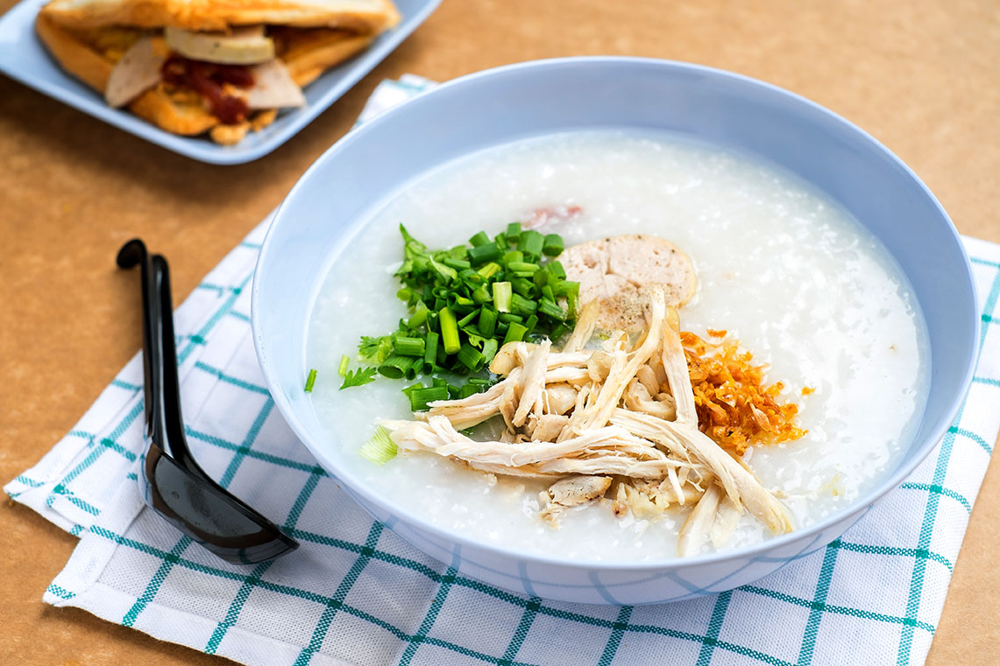

Cháo Gà Recipe

Description
Cháo gà is Vietnamese chicken rice porridge. I have
strong memories as a child of my mom cooking cháo gà during the
winter. It is also great to eat when you are sick.
There are many toppings that people add to cháo gà. Here is the
recipe to create the version of cháo gà as my mom made it.
Ingredients
- 1 whole chicken
- 1 cup of white rice
- 3 quarts of water
- 1 yellow onion
- 2 thumb-sized pieces of ginger
- 1 bunch of green onion
- Fried shallots
- Salt
- White pepper
- Black pepper
- Fish sauce
Steps
- In a large pot, bring 3 quarts of water to a boil
- Peel the onion and add it to the water
- Peel the ginger and slice into medallions, adding them to the
water
- Add the whole chicken to the pot and let simmer for 45
minutes
- After simmering for 45 minutes, remove the chicken and allow to
cool. Discard the aromatics
- Skim any foam and excess fat from the top of the water
- Rinse the rice and add to the pot. Allow to simmer for 45
minutes, stirring occasionally
- As the rice is simmering, shred the chicken and chop green
onion
- After 45 minutes have passed, add the shredded chicken to the
bowl and stir in
- Season with salt and white pepper to taste
- Serve in a bowl and top with additional shredded chicken, black
pepper, green onion, fried shallots, and a dash of fish
sauce